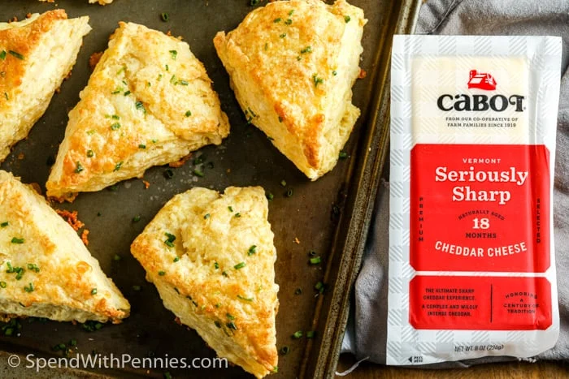

Scones are the English partner to American biscuits — and these are upscaled for any time enjoyment! While scones often have added fruits (like blueberries or cranberries), I personally prefer a savory addition, like Cabot Seriously Sharp Cheddar and a sprinkle of chives. Some store-bought scones can be dense, but not these! They're extra light and fluffy with a rich savory cheddar cheese flavor.
They're quick and easy to make and all you need is a bowl, a wooden spoon and some great cheese!
